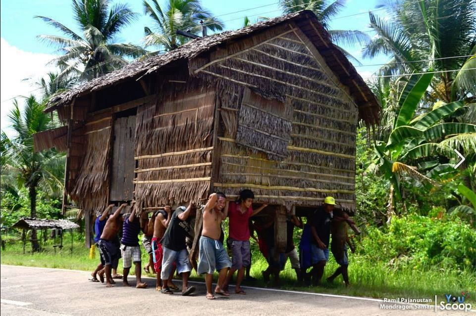
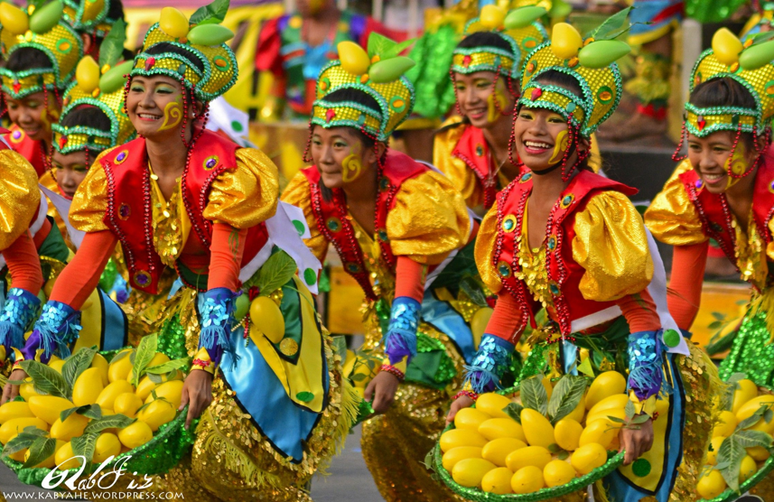
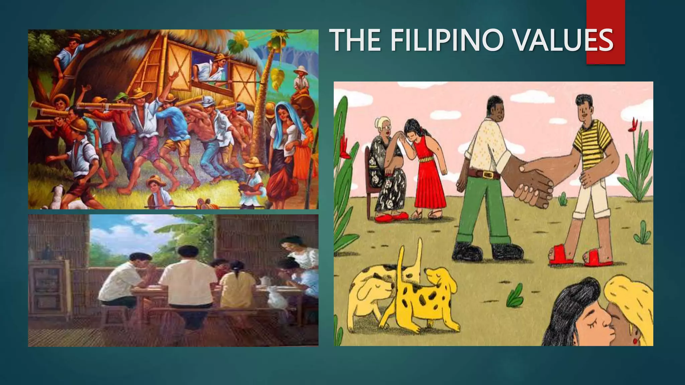

Bayanihan is a foundational Filipino cultural value embodying communal unity, cooperation, and selfless helping, derived from the word bayan (nation, town, or community). Traditionally depicted by neighbors lifting and moving a bahay kubo (nipa hut), it signifies collective effort to achieve a common goal without expecting anything in return.

The fiesta is part and parcel of Filipino culture. Through good times and bad times, the Filipino fiesta must go on. Each city and barrio has at least one local festival of its own, usually on the feast of its patron saint, so that there is always a fiesta going on somewhere in the country. But the biggest and most elaborate festival of all is Christmas, a season celebrated with all the pomp and pageantry the fun-loving Filipinos can manage.

Filipino cultural values are deeply rooted in interpersonal relationships, social harmony, and familial bonds, often described as a blend of indigenous, Spanish, and American influences. Key values include strong family ties (familism), intense hospitality, bayanihan (community spirit), utang na loob (debt of gratitude), and pakikisama (social harmony).